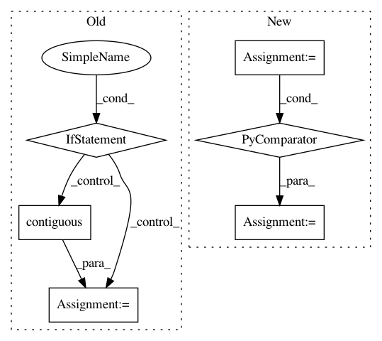

4c6458b841bb49610b5cf6b9fbab94df5cad85ee,gpytorch/lazy/interpolated_lazy_tensor.py,InterpolatedLazyTensor,zero_mean_mvn_samples,#InterpolatedLazyTensor#Any#,439
Before Change
def zero_mean_mvn_samples(self, num_samples):
base_samples = self.base_lazy_tensor.zero_mean_mvn_samples(num_samples)
if self.ndimension() == 3:
res = left_interp(
self.left_interp_indices, self.left_interp_values, base_samples.permute(1, 2, 0).contiguous()
)
return res.permute(2, 0, 1).contiguous()
else:
res = left_interp(
self.left_interp_indices, self.left_interp_values, base_samples.permute(1, 0).contiguous()
)
return res.permute(1, 0).contiguous()
def _getitem_nonbatch(self, row_index, col_index, first_tensor_index_dim=None):
Given an index over rows and columns, gets those items from the LazyTensor.
Implementing this is not necessary, but it improves performance
After Change
def zero_mean_mvn_samples(self, num_samples):
base_samples = self.base_lazy_tensor.zero_mean_mvn_samples(num_samples)
batch_iter = tuple((i + 1) for i in range(base_samples.dim() - 1))
base_samples = base_samples.permute(*batch_iter, 0)
res = left_interp(self.left_interp_indices, self.left_interp_values, base_samples).contiguous()
batch_iter = tuple(i for i in range(res.dim() - 1))
return res.permute(-1, *batch_iter).contiguous()
def _getitem_nonbatch(self, row_index, col_index, first_tensor_index_dim=None):
In pattern: SUPERPATTERN
Frequency: 4
Non-data size: 6
Instances
Project Name: cornellius-gp/gpytorch
Commit Name: 4c6458b841bb49610b5cf6b9fbab94df5cad85ee
Time: 2019-01-23
Author: gpleiss@gmail.com
File Name: gpytorch/lazy/interpolated_lazy_tensor.py
Class Name: InterpolatedLazyTensor
Method Name: zero_mean_mvn_samples
Project Name: asappresearch/sru
Commit Name: faf3aa876462323f2fa721ebd633752d6489808f
Time: 2020-09-18
Author: taolei@csail.mit.edu
File Name: sru/modules.py
Class Name: SRU
Method Name: forward
Project Name: cornellius-gp/gpytorch
Commit Name: 7570ee1d758c93dd4054009fc12be6cc31b54031
Time: 2018-11-25
Author: gpleiss@gmail.com
File Name: gpytorch/lazy/interpolated_lazy_tensor.py
Class Name: InterpolatedLazyTensor
Method Name: _get_indices
Project Name: rusty1s/pytorch_geometric
Commit Name: 4abc2adb4106c4cecd7b373d2371fea33c011b9f
Time: 2018-04-25
Author: matthias.fey@tu-dortmund.de
File Name: torch_geometric/data/collate.py
Class Name:
Method Name: collate_to_batch